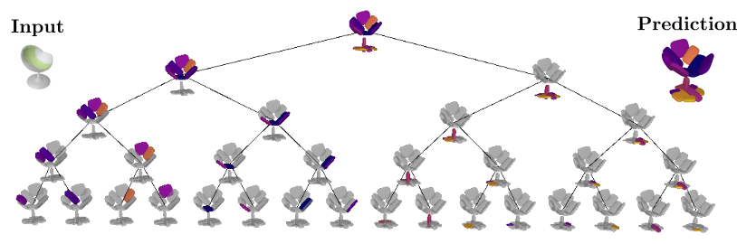
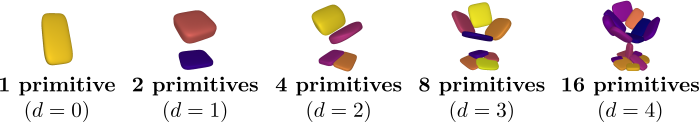
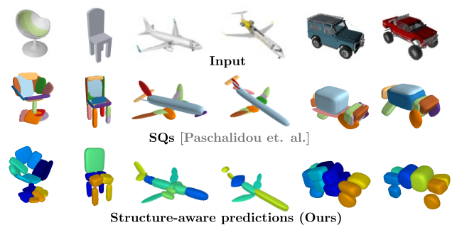
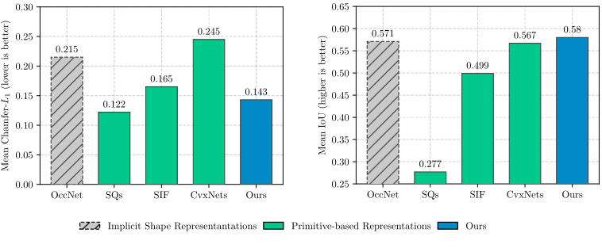
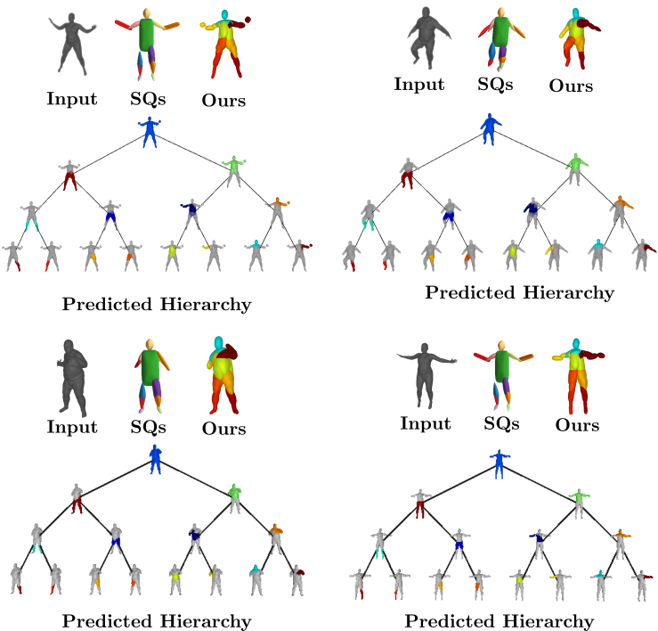

Learning Unsupervised Hierarchical Part Decomposition
of 3D Objects from a Single RGB Image
1 Autonomous Vision Group, MPI for
Intelligent Systems Tübingen
2 University of Tübingen
3 Computer Vision Lab, ETH Zürich 4 KU Leuven
5 Max Planck ETH Center for Learning Systems
3 Computer Vision Lab, ETH Zürich 4 KU Leuven
5 Max Planck ETH Center for Learning Systems
CVPR 2020
Humans perceive the 3D world as a set of distinct objects that
are characterized by various low-level (geometry, reflectance) and high-level
(connectivity, adjacency, symmetry) properties. Recent methods based on
convolutional neural networks (CNNs) demonstrated impressive progress in 3D
reconstruction, even when using a single 2D image as input. However, the
majority of these methods focuses on recovering the local 3D geometry of an
object without considering its part-based decomposition or relations between
parts. We address this challenging problem by proposing a novel formulation
that allows to jointly recover the geometry of a 3D object as a set of
primitives as well as their latent hierarchical structure without part-level
supervision. Our model recovers the higher level structural decomposition of
various objects in the form of a binary tree of primitives, where simple parts
are represented with fewer primitives and more complex parts are modeled with
more components. Our experiments on the ShapeNet and D-FAUST datasets
demonstrate that considering the organization of parts indeed facilitates
reasoning about 3D geometry.
Approach Overview
Our structure-aware representation is based on the simple
assumption that complex object parts should be modelled with more primitives,
whereas geometrically simpler parts with fewer components. In contrast to
existing primitive-based techniques that represent 3D objects as an
unstructured collection of parts, we employ a neural network that learns to
recursively decompose an object into its constituent parts by building a latent
space that encodes both the part-level hierarchy and the part geometries. The
hierarchical decomposition is represented as an unbalanced binary tree of
primitives of depth \(D\).

At every depth level, each of the \(2^d \mid d=0,\dots,
D\) nodes is recursively split into two nodes (its children) until reaching the
maximum depth. This results in a representation with various levels of detail.
Naturally, reconstructions from deeper depth levels are more detailed. Note
that the reconstructions below are derived from the same model, trained with a
maximum number of \(2^4=16\) primitives. During inference, the
network dynamically combines representations from different depth levels to
recover the final prediction.

More importantly, the hierarchical part-based decomposition is learned without any supervision neither on the object parts nor their structure. Instead, our model jointly infers these latent variables during training.
Given an input (e.g. image, voxel grid), our goal is to learn a neural network \(\phi_{\theta}\) which maps the input to a set of primitives that best describe the target object. We represent the target object as a set of points \(\mathcal{X}=\{(\mathbf{x}_i, o_i)\}_{i=1}^N\) where \(mathbf{x}_i\) corresponds to the location of the \(i\)-th point and \(o_i\) denotes its label, namely whether this point lies inside or outside the target object. During training, our network learns to predict a hierarchical decomposition over parts in the form of a binary tree of primitives of depth \(D\) as $$\mathcal{P}=\{\{p_k^d\}_{k=0}^{2^d-1} \,\mid \, d=\{0 \dots D\}\}.$$ Our network comprises three main components:- the partition network that recursively splits the shape representation into representations of parts
- the structure network that focuses on learning the hierarchical arrangement of primitives, namely assigning parts of the object to the primitives at each depth level and
- the geometry network that recovers the primitive parameters

Given an input (e.g. image, voxel grid), our network predicts a binary
tree of primitives \(\mathcal{P}\) of maximum depth \(D\). The
feature encoder maps the input into a feature vector
\(\mathbf{c}_0^0\). Subsequently, the partition network
splits each feature representation \(\mathbf{c}_k^d\) in two
\(\{\mathbf{c}_{2k}^{d+1}, \mathbf{c}_{2k+1}^{d+1}\}\),
resulting in feature representations for \(\{1,2,4,\dots, 2^d\}\) primitives
where \(\mathbf{c}_k^d\) denotes the feature
representation for the \(k\)-th primitive at depth \(d\).
Each \(\mathbf{c}_k^d\) is passed to the structure network
that "assigns" a part of the object to a specific primitive
\(p_k^d\). As a result, each \(p_k^d\) is responsible for
representing a specific part of the target shape, denoted as the set of points
\(\mathcal{X}_k^d\). Finally, the geometry network predicts
the primitive parameters \(\lambda_k^d\) and the reconstruction quality \(q_k^d\)
for each primitive. We use plate notation to denote repetition
over all nodes \(k\) at each depth level \(d\). The final reconstruction is
shown on the right. Our optimization objective is a weighted sum over four terms:
- the structure loss that enforces the hierarchical tree decomposition
- the reconstruction loss that measures how well the predicted shape matches the target shape.
- the compatibility loss that measures how good each primitive fits the object part it represents
- the proximity loss that acts as a regularizer to counteract the vanishing gradients problem
Evaluation on ShapeNet
We evaluate our model on the single-view 3D reconstruction
task and compare against various state-of-the-art methods. We follow the
standard experimental setup and train a single model for the 13 ShapeNet
objects.

Our model yields geometrically accurate reconstructions
that outperform existing primitive-based methods, while performing
competitively with more flexible implicit share representations, such as
Occupancy Networks.

Below we visualize the predicted tree of primitives on
various ShapeNet objects. We observe that our model recovers unbalanced binary
trees of primitives that decompose a 3D object into a set of parts. We
associate every primitive with a unique color, thus primitives illustrated with
the same color correspond to the same object part. Note how our model uses
fewer primitives for representing simpler parts (e.g. screen of the monitor)
and more primitives for more complex parts (e.g. wings of the plane).

Evaluation on Dynamic FAUST
We also evaluate our model on the Dynamic FAUST dataset,
which consists of various humans under different poses. We observe that while
our baseline yields more parsimonious abstractions, their level of detail is
limited. On the contrary, our model captures the geometry of the human body
with more detail.

We further observe that our learned hierarchies have a
semantic interpretation, as the same node is consistently used for representing
the same object part. For example, the node (4, 3) is consistently used for
representing the right leg of different humans under various poses (illustrated
with blue), while node (4, 12) is used for representing the head of different
humans (illustrated with light green).

Acknowledgements
This research was supported by the Max Planck ETH Center for
Learning Systems and a HUAWEI research gift.